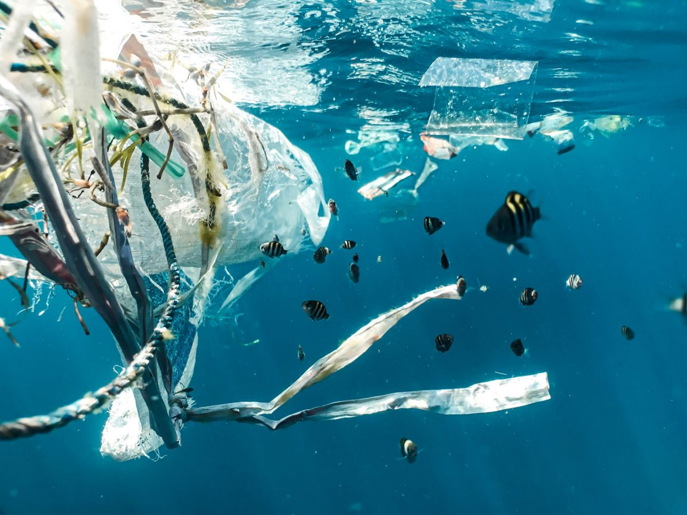

Key Targets
- Target 14.1:Reduce marine pollution.
By 2025, prevent and significantly reduce marine pollution of all kinds, in particular from land-based activities, including marine debris and nutrient pollution.
- Target 14.2:Protect and restore ecosystem.
By 2020, sustainably manage and protect marine and coastal ecosystems to avoid significant adverse impacts, including by strengthening their resilience, and take action for their restoration in order to achieve healthy and productive oceans.
- Target 14.5:Sustainable fishing.
By 2020, effectively regulate harvesting and end overfishing, illegal, unreported and unregulated fishing and destructive fishing practices and implement science-based management plans, in order to restore fish stocks in the shortest time feasible, at least to levels that can produce maximum sustainable yield as determined by their biological characteristics.
